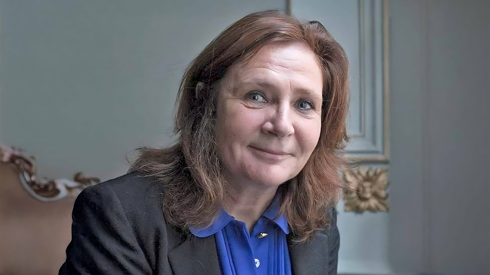

Bénédicte de Perthuis

Présentation
Bénédicte de Perthuis est une magistrate française, spécialisée dans les affaires financières. Dans sa carrière, elle a participé au jugement de plusieurs affaires médiatisées, parmi elles l'affaire EADS et les SwissLeaks. Celle qui lui a valut la plus grande exposition fut celle des assitants parlementaires du Front national, traitée dans notre corpus.
Désignation
- La présidente du tribunal correctionnel
- Juge rouge
- Supplétive du grand capital
- Juge d'instruction
- Juge
- Magistrate
- Présidente de la 11e chambre correctionnelle
- Une ancienne du cabinet de consulting américain
- Expert-comptable
- Commissaire aux comptes
Occurrences dans les articles
- Le Figaro 2025 (23)
- Libération 2025 (4)
- Le Monde 2025 (3)
Citations
Ce que l'on en dit
- Haut magistrat : « Un profil comme ça, forcément, on ne le laisse pas passer dans un tribunal », souligne un haut magistrat, qui rappelle combien « la filière économique et financière est sinistrée » et combien « il est compliqué de trouver des magistrats compétents pour suivre » une matière réputée âpre, technique, exigeant un travail de moine soldat.